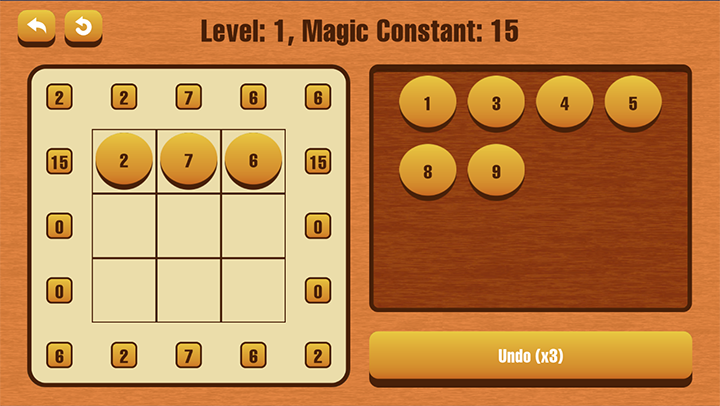

Unity Developer | Multiplayer | AR & VR
Magic Square is an educational puzzle game that challenges players to solve the intriguing puzzles of the magic square. In each level, players are presented with a magic square, a grid of numbers arranged in such a way that the sums of numbers in each row, column, and diagonal are all equal. The objective is for players to solve the puzzle by arranging the numbers correctly, which unlocks the next stage. Currently this game only available on Android phone, you can download it here.
I developed this game entirely on my own for a client, handling every element of its creation. Designed to enhance critical thinking and math skills, Magic Square provides players with a progressively challenging experience as they advance through the stages. By blending educational content with engaging gameplay, the game offers a fun and interactive way for players to explore the logic behind magic squares and sharpen their problem-solving abilities.
